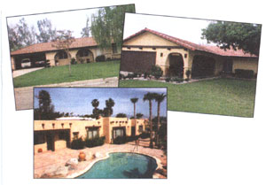
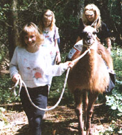

BITS & PIECES
Sixteen years later, Savell's concrete houses have passed the test of time.
Dozens of you have requested follow-up reports on previous MOTHER experiments, specifically alternative housing. (Your message was heard.) So we begin our update with Jesse Savell's passively heated and cooled houses from back in 1977 (issue #48). We're pleased to announce that Savell's houses, made of precast concrete wall panels, have withstood the test of time.
The operative word in Savell's design is mass (which you may well remember from our recent "Firehouse" articles). Since the construction of Egyptian pyramids, builders have been relying on thermal mass to achieve near-constant interior temperatures, not unlike those in deep caves. While the walls in Savell's house design are only six inches thick, their thermal resistance is equivalent to a wall 10" thick. The trick: Savell uses a sandwich effect: several inches of concrete wall panels on the inside, stucco on the outside, and a layer of polyurethane in between.
Unlike other alternative-style houses, these are designed to look like "typical" houses-Victorian, Colonial, or any other style.
By building the house facing south, the structure also becomes a passive solar collector, absorbing the sun's low-winter rays and storing the energy in the walls and foundation. Because the house maintains an average temperature of 58°F year-round, you'll save plenty on your energy bills. Think about it: when it's 10°F out side, the average heating system must overcome a temperature difference of 60°F to keep the optimal 70°F temperature inside. The Savell house must overcome a difference of only 12°F, which can be achieved with a small heating pump.
Dean Geraldine Rice, who has been living in a Savell-design house in Canyon Lake, California, for 13 years, swears by it. "During mid-summer, when temperatures reach into the 90s here, we hardly ever use our air conditioning. I'd say our summer energy bills are about 70% less than our neighbors' who live in `normal' houses."
Since we last visited the Savell system, the construction has qualified for Solar Tax credits, survived numerous earthquakes virtually damagefree, and even won first place in California's first Passive Solar Design competition in 1979. In addition, Mr. Savell has reduced by half the amount of concrete required to build the walls without compromising the heating or cooling capabilities.
Of course, some minor annoyances come with the territory. Says Toni DiRienzo, who owns a Savell design in Fontana, California: "I've noticed that our bedroom and bathroom become really humid after taking a shower because moisture gets trapped inside, but we're installing a turbo fan in our hallway ceiling to fix that. Also, when it comes to hanging pictures, you'll need to use a special drill for concrete, so take plenty of time when planning where to hang them." Still, for DiRienzo, these concerns are more than balanced by the house's energy efficiency. "During the summer, we leave our windows open at night, and close them in the morning-it's so cool when we wake up, we practically need a sweater!"
Information packets on the Savell design are available, and include a booklet, energy-commission letters, releases, photos, and government studies. If interested, send $24.95 to: Elan, 3650 Fairmount Blvd., Riverside, CA 92501.
For five generations, the Snodgrass family's 100-acre farm just north of Baltimore, Maryland, produced fairly predictable crops, but these days the fertile land is nurturing a unique combination: llamas and kids. How they grow up together is the genius of farm owner Ed Snodgrass and the Living Classrooms Foundation, a nonprofit, Baltimore-based organization that provides hands-on education and job-skill training to kids who need extra help.
For Snodgrass, 41, it all started with the llamas. He had to find something to keep the grass down after he sold a dairy herd in the 1970s. He didn't know much about llamas, except that they were fairly low-maintenance, gentle beings, so he bought a few. Several years later he learned about the Living Classrooms Foundation, which takes inner-city, at-risk kids on boat trips to educate them about the Chesapeake Bay and teach them communication, teamwork, and other skills that make boats-and people-function successfully.
Wondering what his llamas could do besides eat, Snodgrass sprouted an idea. He proposed taking the kids on llama treks around his farm to give them a chance to learn stream ecology and see how the bay is affected by what happens to the land and water far from its shores.
"We connected spending a day with the streams and a day on the bay so they could see what happens to the clear stream water, how it becomes the Inner Harbor in Baltimore," Snodgrass says.
The first year, 1988, he did about five treks. By 1992, about 900 youngsters, as well as physically disabled adults, visited Emory Knoll Llama Farm for a variety of excursions. The trips include studies (and swimming) in streams, discussions about Native Americans and how they lived off the land, overnights in teepees, stargazing through telescopes, learning where vegetables come from, and walking through the woods in total silence.
About half the children are from the inner city. Many have never spent a night sleeping under the stars or lived a day beyond the city's relentless noise. Snodgrass says some are astounded when they learn that carrots grow underground and lettuce comes out of the dirt.
"The experience of experience is underrated in our culture," Snodgrass says. "We take the extraordinary for granted. I think it's nice to take groups and step back and have the ordinary be extraordinary."
The llamas provide a couple of services. They carry backpacks in which the kids can place their food and gear. More importantly, though, they are completely new to the children and as such, they are at first intimidating. Then, as the kids groom, handle, and lead them, they gain a new measure of confidence, one of the program's fundamental goals. Snodgrass tries to "sneak the learning in."
"The animals have to be perfect with kids," he says. "You can't have any possibility of bad behavior. I've got to have an animal that'll walk behind a kid, even if they drop the rope."
Since he started his treks, Snodgrass has gained another job; he's now director of educational programs at the Living Classrooms Foundation. He hastens to note he's still a farmer, though-certainly of a most unique and creative variety.
To contact the Living Classrooms Foundation, write: The Lighthouse, Pier 5, 717 Eastern Avenue, Baltimore, MD 21202 or call 410/685-0295.
-Wendy Mitman Clarke
"When most people visit my one-acre orchard, their first comment is, `I didn't know you could grow these things here. I thought they were tropical."'
David Kuchta is talking about his orchard of Actinidia arguta or kolomkta-kiwi to the rest of us. His kiwi, the hardy type, is a cousin to the fuzzy fruit found in markets. It has smooth skin like a plumb, and ranges in size from 3/4" to 1 3/4". As for flavor, most folks say it tastes like a blend of strawberry and pineapple. Some claim there's even a hint of blueberry.
Kiwis can be grown almost anywhere in the country, according to Kuchta, who has grown them for eight years. No special type of soil is required, as long as it offers good drainage. Kiwis can also be grown without any pesticides or insecticides.
Right now, the fruit's a well-kept secret, sold almost exclusively in California, Washington, and Oregon. Kuchta estimates that only 50 to 100 acres of kiwis are grown commercially in the United States. For more information, send a SASE to: "Kiwis `R' Us": RD 1 Tippets Rd., Route 54, Nesquehoning, PA 18240, or give him a call at 717/645-3652.
Editor's note: Please send interesting news items to "Bits & Pieces," Mother Earth News, P.O. Box 129, Arden, NC 28794.
|
 WENDY MITMAN CLARKE |
 |
|